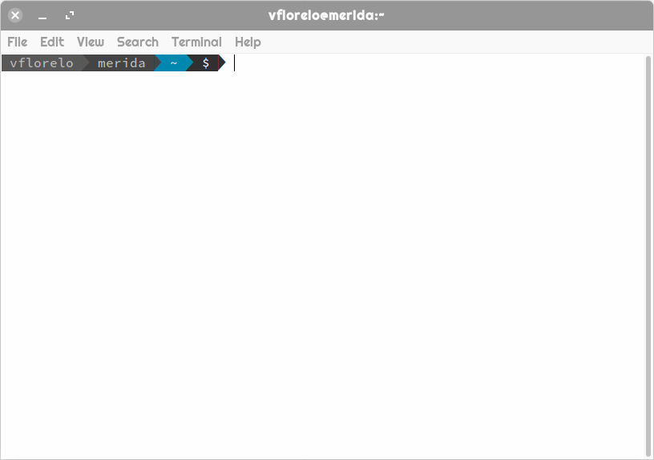

Introducción¶
Existen múltiples programas para el llamado de variantes, no obstante la gran mayoria no puede ser ejecutada en ambientes windows. En consecuencia, es importante estar familiarizado con el uso de sistemas unix/linux como puede ser Mac-OSX o Ubuntu linux.
Adicionalmente, muchos de los programas para el llamado de variantes no cuenta con una interfáz gráfica de usuario, por ello, es importante aprender a usar la línea de comandos con fluidez
Consideraciones y conceptos¶
Importante
Para el uso óptimo de la línea de comandos debemos tener en consideración las siguientes definiciones y precauciones
Shell¶
Es el intérprete entre el usuario y las aplicaciones
El shell recibe una entrada a manera de comandos
Estos comandos operan a través de aplicaciones
Las aplicaciones interactuan con el kernel controlando el procesador, la memoria RAM y el disco de la máquina
Terminal¶
La terminal o línea de comandos es una interfáz no gráfica con la cúal el usuario puede interactuar con el sistema
A pesar de su simpleza es una interfaz sumamente poderosa y eficiente, ya que nos permite ver que es lo que está ocurriendo tras bambalinas mientras un programa se está ejecutando
Es un estándar en el cómputo y seguirá siendolo por mucho tiempo más

Prompt¶
- El prompt es la linea en la terminal que nos indica que nuestra consola está responsiva y que puede aceptar comandos del usuario
- 
Peligro
Si no hay prompt no podemos mandar comandos
{kind=link}
Comando¶
Un comando es la primera palabra que va después del prompt (o después de un pipe "|", eso lo veremos en parseo ), un comando es esencialmente un elemento ejecutable que puede ser un programa binario o un script
Advertencia
El comando debe estar presente en el
$PATHpara que la terminal lo pueda ejecutar
{kind=link}
{kind=link}
Opción¶
Ciertos comandos y programas pueden comportarse distinto si le pasamos una o más opciones, las opciones se especifican con el signo “-” o con los signos “--”
{kind=link}
{kind=link}
Argumento¶
Un argumento es una o más palabras que vienen después de un comando, pueden ir antes o después de una opción (o no llevar opciones incluso)
{kind=link}
{kind=link}
Truco
Un argumento no lleva el signo “-”
$PATH¶
En unix/linux la variable de entorno $PATH contiene el conjunto de directorios que alberga aplicaciones en nuestro sistema
Al hacer echo "$PATH"

Veremos que los programas de mi computadora, residen en alguna de las siguientes carpetas:
/usr/lib64/mpi/gcc/openmpi/bin /usr/local/bin /usr/bin /bin /usr/lib/mit/sbin /usr/local/bioinformatics/local_scripts /usr/local/bioinformatics/bin /usr/local/bioinformatics/rmblast /usr/local/bioinformatics/opt/augustus-3.3.2/scripts /usr/local/bioinformatics/opt/augustus-3.3.2/binTruco
Adicionalmente, si queremos instalar un programa nuevo, lo podemos colocar en cualquiera de las carpetas enlistadas anteriormente y lo podemos invocar desde cualquier sitio en nuestra terminal
Uso de mayúsculas y minúsculas¶
Peligro
Los sistemas unix/linux son sensibles al uso de mayúsculas y minúsculas!
Es importante revisar lo que se ingresa en la terminal antes de mandar cualquier instrucción
En nuestro sistema windows en un mismo directorio no pueden existir los siguientes archivos:
"A.pdf"
"a.pdf"
Sin embargo, en nuestro sistema unix/linux podemos tener dentro de un mismo directorio los siguientes archivos:
"abcD.pdf"
"Abcd.pdf"
"aBcd.pdf"
"abCd.pdf"
"ABCd.pdf"
Uso de caracteres especiales¶
Existen caracteres con un significado específico del sistema, en consecuencia, se deben tratar de forma especial.
Estos caracteres son los siguientes y por lo general los ubicas en tu teclado en la barra numérica:
@
#
$
%
^
&
*
-
+
=
( )
{ }
[ ]
;
:
,
'
"
<
>
.
/
?
\
|
Advertencia
Si alguno de nuestros archivos tiene espacios en su nombre (o caracteres especiales), la terminal necesita saber que estos espacios son parte del mismo argumento
$ cat mi archivo.txt cat: mi: No such file or directory cat: archivo.txt: No such file or directoryCuando hicimos el comando
cat mi archivo.txt, lo que está ocurriendo es quecatespera dos archivos, un archivo llamado "mi", y un archivo llamado "archivo.txt".Al no existir estos archivos, la terminal nos arroja un mensaje de error
Esto lo solucionamos de dos formas:
Truco
Encerrando 'mi archivo.txt' entre comillas (dobles o sencillas):
$ cat "mi archivo.txt" Hola mundo!Escapando el espacio con el simbolo “\”:
$ cat mi\ archivo.txt Hola mundoAmbas soluciones hacen que «mi archivo.txt» sea un solo argumento en vez de dos.
Estas soluciones funcionan también para el resto de los caracteres especiales.
Comandos básicos¶
En esta sección encontraremos comandos básicos para el manejo de archivos, es indispensable que tengamos familiaridad con estos comandos antes de continuar con la manipulación de archivos
ls¶
List, nos indica que elementos hay en el directorio actual
Opciones de
ls
Listado de los archivos en formato extendido (
-l):$ ls -l total 4 -rw-r--r-- 1 vflorelo bioinformatics 12 Aug 26 15:07 'mi archivo.txt'Listado de los archivos en formato extendido en lenguaje humano (
-l -h):$ ls -l -h total 4.0K -rw-r--r-- 1 vflorelo bioinformatics 12 Aug 26 15:07 'mi archivo.txt'Listado de los archivos incluido archivos ocultos (
-a):$ ls -a . .. 'mi archivo.txt'Listado de los archivos en orden cronológico (
-l -h -t):$ ls -l -h total 4.0K -rw-r--r-- 1 vflorelo bioinformatics 0 Aug 26 15:28 archivo.txt -rw-r--r-- 1 vflorelo bioinformatics 12 Aug 26 15:07 'mi archivo.txt' -rw-r--r-- 1 vflorelo bioinformatics 0 Aug 26 15:28 'otro archivo.txt' $ ls -l -h -t -rw-r--r-- 1 vflorelo bioinformatics 0 Aug 26 15:28 archivo.txt -rw-r--r-- 1 vflorelo bioinformatics 0 Aug 26 15:28 'otro archivo.txt' -rw-r--r-- 1 vflorelo bioinformatics 12 Aug 26 15:07 'mi archivo.txt'Listado de los archivos en orden alfanumérico reverso (
-l -h -r):$ ls -l -h total 4.0K -rw-r--r-- 1 vflorelo bioinformatics 0 Aug 26 15:28 archivo.txt -rw-r--r-- 1 vflorelo bioinformatics 12 Aug 26 15:07 'mi archivo.txt' -rw-r--r-- 1 vflorelo bioinformatics 0 Aug 26 15:28 'otro archivo.txt' $ ls -l -h -r total 4.0K -rw-r--r-- 1 vflorelo bioinformatics 0 Aug 26 15:28 'otro archivo.txt' -rw-r--r-- 1 vflorelo bioinformatics 12 Aug 26 15:07 'mi archivo.txt' -rw-r--r-- 1 vflorelo bioinformatics 0 Aug 26 15:28 archivo.txtListado de los archivos en orden cronológico reverso (
-l -h -r -t):$ ls -l -h total 4.0K -rw-r--r-- 1 vflorelo bioinformatics 0 Aug 26 15:28 archivo.txt -rw-r--r-- 1 vflorelo bioinformatics 12 Aug 26 15:07 'mi archivo.txt' -rw-r--r-- 1 vflorelo bioinformatics 0 Aug 26 15:28 'otro archivo.txt' $ ls -l -h -r -t total 4.0K -rw-r--r-- 1 vflorelo bioinformatics 12 Aug 26 15:07 'mi archivo.txt' -rw-r--r-- 1 vflorelo bioinformatics 0 Aug 26 15:28 'otro archivo.txt' -rw-r--r-- 1 vflorelo bioinformatics 0 Aug 26 15:28 archivo.txt
cd¶
Change Directory nos cambia al directorio que le indiquemos
Modos de operación de cd
Dirigirse a un directorio dentro del directorio actual:
$ pwd /home/vflorelo $ ls dia_01 $ cd dia_01 $ pwd /home/vflorelo/dia_01 $ ls Homo_sapiens_GRCh38.fasta.fai test_data_variants.tsv test_data_variants.vcf
Dirigirse a un directorio usando una ruta absoluta:
$ pwd /home/vflorelo $ cd /home/vflorelo/dia_01 $ pwd /home/vflorelo/dia_01 $ cd /usr/local/bioinformatics $ pwd /usr/local/bioinformatics $ ls bcftools bin bwa data htslib include lib libexec samtools share $ cd /home/vflorelo/dia_01 $ pwd /home/vflorelo/dia_01
Dirigirse al directorio superior:
$ pwd /home/vflorelo/dia_01 $ cd .. $ pwd /home/vflorelo
Dirigirse a un directorio usando una ruta relativa:
$ pwd /home/vflorelo/dia_01 $ cd ../dia_02 $ pwd /home/vflorelo/dia_02
mkdir¶
Make Directory, crea un directorio con el nombre que le indiquemos
Modos de operación de mkdir
Crear a un directorio dentro del directorio actual:
$ pwd /home/vflorelo $ ls dia_01 $ mkdir dia_02 $ ls dia_01 dia_02
Crear un directorio usando una ruta absoluta:
$ pwd /home/vflorelo $ mkdir /home/vflorelo/dia_03 $ pwd /home/vflorelo $ ls dia_01 dia_02 dia_03
Crear un directorio usando una ruta relativa:
$ pwd /home/vflorelo/dia_01 $ mkdir ../dia_04 $ cd .. $ pwd /home/vflorelo $ ls dia_01 dia_02 dia_03 dia_04
cp¶
Copy, copia un archivo a un directorio (o al mismo directorio pero con nombre diferente)
Modos de operación de
cp
Copiar el contenido de un archivo a otro archivo:
$ cp mi_archivo.txt mi_nuevo_archivo.txt $ cat mi_nuevo_archivo.txt Hola mundo!Copiar el archivo desde el directorio actual a otro directorio:
$ ls mi_archivo.txt otro_directorio $ ls otro_directorio $ cp mi_archivo.txt otro_directorio $ ls otro_directorio mi_archivo.txtAdvertencia
Si no existe el directorio “otro_directorio”, cp creará un nuevo archivo llamado “otro_directorio”
mv¶
Move, mueve un archivo de un lugar a otro (o le cambia el nombre al archivo)
Modos de operacion de
mv
Cambia el nombre de un archivo a otro archivo:
$ mv mi_archivo.txt mi_nuevo_archivo.txt $ cat mi_nuevo_archivo.txt Hola mundo! $ cat mi_archivo.txt cat: mi_archivo.txt: No such file or directoryMover el archivo desde el directorio actual a otro directorio:
$ ls mi_archivo.txt otro_directorio $ ls otro_directorio $ mv mi_archivo.txt otro_directorio $ ls otro_directorio $ ls otro_directorio mi_archivo.txtAdvertencia
Si no existe el directorio «otro_directorio», mv le cambiará el nombre a “mi_archivo.txt” y se llamará “otro_directorio”, “mi_archivo.txt” no existirá más
Peligro
Si ya existe un archivo con el nombre que le indiquemos a
mvcomo destino, perderemos la información del archivo destino:$ ls archivo_equis.txt tesis_final.docx $ cat archivo_equis.txt Este archivo contiene basura $ mv archivo_equis.txt tesis_final.docx $ ls tesis_final.docx $ cat tesis_final.docx Este archivo contiene basura
rm¶
Remove, elimina el archivo o directorio indicado
Modos de operacion de
rm
elimina un archivo:
$ ls mi_archivo.txt mi_nuevo_archivo.txt $ rm mi_archivo.txt $ ls mi_nuevo_archivo.txtElimina un directorio con todos sus elementos:
$ ls otro_directorio $ ls otro_directorio mi_archivo.txt $ rm -r otro_directorio $ ls otro_directorio ls: cannot access 'otro_directorio': No such file or directoryPeligro
rmes un comando destructivo, si se borran los archivos no son recuperables
cat¶
Concatenate, nos muestra el contenido de un archivo, o archivos
less¶
Less nos muestra el contenido de un archivo, pero nos lo muestra, una pantalla a la vez
head¶
- Head, nos da las primeras N líneas de un archivo
Modos de operación de
headMuestra las primeras 10 líneas de un archivo:
$ head Homo_sapiens_GRCh38.fasta.fai 1 248956422 16 70 71 2 242193529 252512975 70 71 3 198295559 498166428 70 71 4 190214555 699294797 70 71 5 181538259 892226719 70 71 6 170805979 1076358398 70 71 7 159345973 1249604479 70 71 8 145138636 1411226840 70 71 9 138394717 1558438902 70 71 10 133797422 1698810704 70 71
Muestra las primeras 2 líneas de un archivo:
$ head -n2 Homo_sapiens_GRCh38.fasta.fai 1 248956422 16 70 71 2 242193529 252512975 70 71
Muestra las primeras líneas de un archivo exceptuando las ultimas 2 líneas:
$ head -n-2 Homo_sapiens_GRCh38.fasta.fai 1 248956422 16 70 71 2 242193529 252512975 70 71 3 198295559 498166428 70 71 4 190214555 699294797 70 71 5 181538259 892226719 70 71 6 170805979 1076358398 70 71 7 159345973 1249604479 70 71 8 145138636 1411226840 70 71 9 138394717 1558438902 70 71 10 133797422 1698810704 70 71 11 135086622 1834519535 70 71 12 133275309 1971535983 70 71 13 114364328 2106715242 70 71 14 107043718 2222713363 70 71 15 101991189 2331286294 70 71 16 90338345 2434734517 70 71 17 83257441 2526363427 70 71 18 80373285 2610810278 70 71 19 58617616 2692331770 70 71 20 64444167 2751786798 70 71 21 46709983 2817151612 70 71 22 50818468 2864528898 70 71 X 156040895 2916073361 70 71
tail¶
Tail, nos da las últimas N líneas de un archivo
Modos de operación de tail
Muestra las últimas 10 líneas de un archivo:
$ tail Homo_sapiens_GRCh38.fasta.fai 16 90338345 2434734517 70 71 17 83257441 2526363427 70 71 18 80373285 2610810278 70 71 19 58617616 2692331770 70 71 20 64444167 2751786798 70 71 21 46709983 2817151612 70 71 22 50818468 2864528898 70 71 X 156040895 2916073361 70 71 Y 57227415 3074343428 70 71 MT 16569 3132388394 70 71
Muestra las últimas 2 lineas de un archivo:
$ tail -n2 Homo_sapiens_GRCh38.fasta.fai Y 57227415 3074343428 70 71 MT 16569 3132388394 70 71
Muestra las últimas líneas de un archivo exceptuando las primeras 2 líneas:
$ tail -n+2 Homo_sapiens_GRCh38.fasta.fai 3 198295559 498166428 70 71 4 190214555 699294797 70 71 5 181538259 892226719 70 71 6 170805979 1076358398 70 71 7 159345973 1249604479 70 71 8 145138636 1411226840 70 71 9 138394717 1558438902 70 71 10 133797422 1698810704 70 71 11 135086622 1834519535 70 71 12 133275309 1971535983 70 71 13 114364328 2106715242 70 71 14 107043718 2222713363 70 71 15 101991189 2331286294 70 71 16 90338345 2434734517 70 71 17 83257441 2526363427 70 71 18 80373285 2610810278 70 71 19 58617616 2692331770 70 71 20 64444167 2751786798 70 71 21 46709983 2817151612 70 71 22 50818468 2864528898 70 71 X 156040895 2916073361 70 71 Y 57227415 3074343428 70 71 MT 16569 3132388394 70 71
wc
Word count, nos indica el número de líneas, palabras y caracteres de un archivo o de un string
Modos de operación de wc
Nos da un resumen del contenido de un archivo:
$ wc Homo_sapiens_GRCh38.fasta.fai 25 125 715 Homo_sapiens_GRCh38.fasta.fai
Cuenta el número de líneas en un archivo:
$ wc -l Homo_sapiens_GRCh38.fasta.fai 25 Homo_sapiens_GRCh38.fasta.fai
Cuenta el número de palabras en un archivo:
$ wc -w Homo_sapiens_GRCh38.fasta.fai 125 Homo_sapiens_GRCh38.fasta.fai
Cuenta el número de caracteres en un archivo:
$ wc -c Homo_sapiens_GRCh38.fasta.fai 715 Homo_sapiens_GRCh38.fasta.fai
scp¶
El comando scp nos permite al igual que cp, copiar archivos desde un origen hacia un destino, no obstante, lo hace a través de servidores remotos.
Este comando combina las bondades de cp con los protocolos de seguridad de ssh
Por ello, el uso de scp es muy similar al de cp y al de ssh:
$ scp -i atg.pem vflorelo@atgenomics.ddns.net:/home/vflorelo/dia_01/Homo_sapiens_GRCh38.fasta.fai .
La construcción anterior nos permite copiar el archivo Homo_sapiens_GRCh38.fasta.fai desde el directorio /home/vflorelo/dia_01 ubicado en el servidor atgenomics.ddns.net utilizando la llave atg.pem
Advertencia
A dónde lo va a copiar?
Noten al final de la construcción, el punto . el cual especifica que copiará el archivo Homo_sapiens_GRCh38.fasta.fai hacia el directorio actual